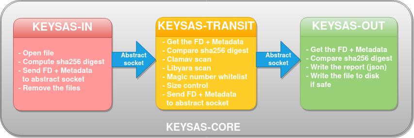
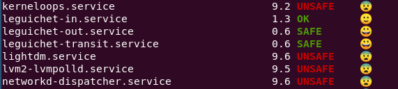

Administration
Design
Keysas provides three different daemons running at the same time and three different configuration files to be able to configure each daemon. The following schema explains the logic behind Keysas.
Untrusted files are deposited (via rsync over ssh) in the entry SAS (in).
Keysas-in, the first daemon will take some metadata (name, date, sha256) of each file discovered and send each file descriptor (as raw) to the second daemon Keysas-transit with the associated metadata using an abstract socket. When done, Keysas-in simply unlink(at) the files.
Keysas-transit receives the file descriptor through the abstract socket and metadata. It automatically verifies the sha256 digest, scans the file descriptors using Clamav and Yara. It also performs a size and magic number verification. Each test and verification is added to metadata and sent to Keysas-out.
Keysas-out receives the raw file descriptors and metadata through a dedicated abstract socket. It immediately verifies the sha256 digest. If a file is considered unhealthy (reading metadata), the file descriptor is definitly closed. If not the file descriptor is copied into the outgoing SAS with a report containing the metadata associated. If enrolled using Keysas-admin, it also performs an hybrid post-quantum signature using Ed25519/Ml-Dsa-87 on each file and linked report containing the file metadata and the station analysis.
System configuration
Recommendations
Here are some recommendations and best practices to use Keysas in good conditions.
System hardening recommendations.
The GNU/Linux system used should be hardened according to the best practices such as ANSSI, CIS, STIG etc.
You can take a look at the following: https://cyber.gouv.fr/en/publications/configuration-recommendations-gnulinux-system
Network Cards (Only for network gateway)
- We recommend to set up at least four network cards:
One dedicated card and IP address for the untrusted network;
One dedicated card and IP address for the trusted network;
One dedicated card and IP address for the administration tasks;
One dedicated card and IP address for Syslog.
OpenSSH configuration (Only for network gateway)
- You can set up three separate OpenSSH daemons:
One for the administration network;
One for the untrusted network;
One for the trusted network.
- Alternatively, you can choose to set up only two separate OpenSSH daemons:
One for the administration network;
One for the untrusted network and the trusted network.
A third solution would be to reserve an SSH access using a dedicated daemon and a dedicated network.
In any cases, you should configure allowed users and networks in your sshd configuration:
# OpenSSH daemon listening on the *untrusted_network*: AllowUsers untrusted_user@untrusted_network untrusted_user2@untrusted_network# OpenSSH daemon listening on the *trusted_network*: AllowUsers trusted_user@trusted_network trusted_user2@trusted_network# OpenSSH daemon listening on the *administration_network*: AllowUsers admin_user@administration_network admin_user2@administration_networkExplanations about creating untrusted_users and trusted_users can be found in the Usage section.
keysas-in
keysas-in daemon is responsible for sending file descriptors in the entry point directory. The ELF binary is installed under:
/usr/bin/keysas-in
The configuration file for this daemon is:
/etc/keysas/keysas-in.conf
The corresponding logs:
journalctl -fu keysas-in.service
Let’s take a look at the configuration:
$ view /etc/keysas/keysas-in.conf
It should look like this:
# Keysas-in configuration file
# This file is part of keysas
# Socket_in path
# You should not touch this parameter.
SOCKET_IN=socket_in
# Path where incoming files will be deposited
# You should not touch this parameter.
# Pay attention to add a slash at the end.
SAS_IN=/var/local/in/
Warning
Do not modify this parameters unless you really know what to do.
keysas-transit
keysas-transit is mainly responsible for perfoming Clamav and Yara scans and verifying size limit and forbidden file formats based on their magic numbers.
The ELF binary is installed under:
/usr/bin/keysas-transit
The configuration file for this daemon is:
/etc/keysas/keysas-transit.conf
The corresponding logs:
journactl -fu keysas-transit.service
Let’s now take a look at the configuration of the second daemon called keysas-transit:
$ view /etc/keysas/keysas-transit.conf
It should look like this:
# Keysas-transit configuration file
# This file is part of keysas.
#
# Socket_in path
# You should not touch this parameter.
# Pay attention to add a slash at the end
SOCKET_IN=socket_in
# Socket_out path
# You should not touch this parameter.
# Pay attention to add a slash at the end
SOCKET_OUT=socket_out
# Max file size to be transfered
# You should not touch this parameter.
MAX_SIZE=500000000
# Path to Yara rules (don't forget to add index.yar)
RULES=/usr/share/keysas/rules/index.yar
# Yara max file size to scan
# The bigger it is, the longer it takes to scan a file !
# Default is 50Mo (50000000 bytes)
YARA_MAXFILESIZE=50000000
# Yara timeout when scannning files
YARA_TIMEOUT=1000
# Tells if keysas should remove the file if Yara matched at least one rule
YARA_CLEAN=true
# Clamd server IP
# Note that if you modify this address, you also
# have to edit the following file
# /etc/systemd/system/keysas-in.service.d/keysas-in.conf
# to allow sockets via systemd.
# See https://keysas.fr/configuration.html#systemd
# for more information.
CLAMAV_IP=127.0.0.1
# Clamd server port
CLAMAV_PORT=3310
# Set here a whitelist (comma separated) of allowed file types
# For example:
# ALLOWED_TYPES="deb,rpm"
# See https://keysas.fr/administration.html#keysas-transit for more information.
ALLOWED_TYPES="jpg,png,bmp,mp4,m4v,avi,wmv,mpg,flv,mp3,wav,ogg,epub,mobi,doc,docx,xls,xlsx,ppt,pptx"
Warning
Do not modify SOCKET_IN, SOCKET_OUT parameters unless you really know what to do.
You might want to ajust MAX_SIZE, YARA_MAXFILESIZE, YARA_TIMEOUT, YARA_CLEAN and ALLOWED_TYPES according to your needs.
YARA_MAXFILESIZE
This parameter sets the maximum file size (in bytes) to be scanned. The bigger it is, the longer it can take to scan a file ! You should set this option to the same value as MAX_SIZE to be consistant. If a file is bigger than YARA_MAXFILESIZE, it is deleted.
YARA_TIMEOUT
This parameter sets a timeout (in seconds) to scan a file. If a file scan takes too long because of a big file, you can adjust the timeout here.
YARA_CLEAN
This parameter tells if Keysas should remove the file if Yara matched at least one rule.
ALLOWED_TYPES
This parameter creates a whitelist of allowed file types. Types not explicitly listed here simply won’t by transfered. The type are infered from the content of the file (not from their extension). The known types and associated mime type are listed here: https://github.com/bojand/infer#supported-types
keysas-out
The last daemon called keysas-out is only responsible for writing the file descriptors and the reports on the directory outgoing directory.
The ELF binary is installed under:
/usr/bin/keysas-out
The configuration file for this daemon is:
/etc/keysas/keysas-out.conf
The corresponding logs:
journalctl -fu keysas-out.service
Finally, here is the configuration of the last daemon called keysas-out:
/etc/keysas/keysas-out.conf
It should look like this:
# Keysas-out configuration file
# This file is part of keysas
#
# Socket_out path
# You should not touch this parameter.
# Pay attention to add a slash at the end
SOCKET_OUT=socket_out
# Path where incoming files will be deposited
# You should not touch this parameter.
# Pay attention to add a slash at the end
SAS_OUT=/var/local/out/
Warning
You should not modify SOCKET_OUT and KEYSASAS_OUTSOUT parameters.
Systemd unit files
We won’t discuss here how Keysas’s systemd hardening is made, as it is not much interesting. We will simply explain how to reconfigure keysas-in’s unit if you need to run the Clamav daemon on another server.
Systemd units are splitted into two differrent files. In case of keysas-in:
/etc/systemd/system/keysas-in.service
This fragment contains the basic configuration of the unit. You do not need to modify this one.
And :
/etc/systemd/system/keysas-in.service.d/security.conf
This is where comes the hardening part of the unit. The security.conf file is a drop-in systemd file. It is automatically concatenated with the fragment part of the unit. You can see the entire resulting unit using the following command:
$ systemctl cat keysas-in
If you want to allow keysas-in to communicate with a Clamav server listening on IP 192.168.1.43:
Edit the Systemd unit
#/etc/systemd/system/keysas-in.service.d/security.conf
IPAddressAllow=127.0.0.1/8
Change the above parameter with:
#/etc/systemd/system/keysas-in.service.d/security.conf
IPAddressAllow=192.168.1.43/32
Warning
Do not forget to provide a netmask, Systemd requires it !
Then, reload the daemon:
$ sudo systemctl daemon-reload
and restart keysas:
$ sudo systemctl restart keysas
And that’s it, you’re all done !
Here is the security result achieved by default according to the systemd analyse-security command:
Apparmor
From Wikipedia :
“AppArmor (Application Armor) is a Linux kernel security module that allows the system administrator to restrict programs capabilities with per-program profiles. Profiles can allow capabilities like network access, raw socket access, and the permission to read, write, or execute files on matching paths.”
Note
Although we are working on supporting SELinux, Keysas is only providing Apparmor profiles at this time.
Apparmor profiles are located here:
/etc/apparmor.d/usr.bin.keysas-in
/etc/apparmor.d/usr.bin.keysas-transit
/etc/apparmor.d/usr.bin.keysas-out
You will probably never have to modify them (it is not recommended anyway). Nevertheless, in case you need to update them, do not forget to reload the changed profile:
$ sudo apparmor_parser -r /etc/apparmor.d/usr.bin.keysas-in
Then, verify that the profile is still in enforce mode:
$ sudo aa-status
9 processes are in enforce mode.
/usr/bin/freshclam (1580)
/usr/bin/keysas-in (433022)
/usr/bin/keysas-out (433027)
/usr/bin/keysas-transit (433025)
/usr/sbin/clamd (966)
...
Libyara analysis
keysas-transit daemon is able to perform a Yara scan on transfered files according to the rules defined in path:
/usr/share/keysas/rules/index.yar
This file act as an index listing a subset of rules.
The default target make install-yararules already clones a lot of usefull rules from various repositories , but you can easily create your own rules. Include your custom rules into /usr/share/keysas/rules/index.yar, like that :
include "./custom/custom_rule.yar"
Help
You should test every new rules before adding them in production.